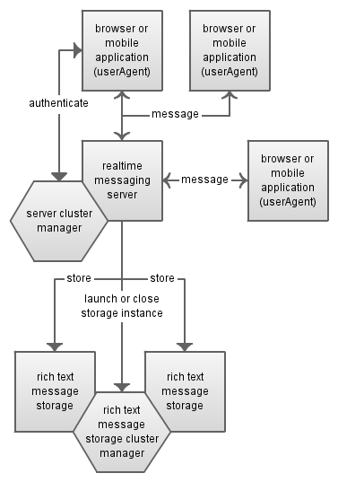
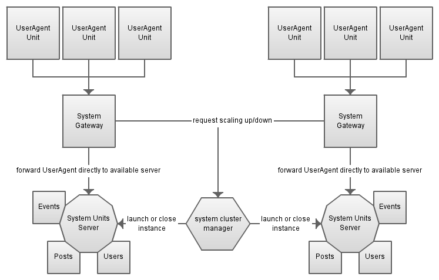

The problem
Fast development of small to large scale web based software applications designed to serve different end-user requirements. Such software applications should be scalable, maintainable and extendable using rapid continuos deployment without sacrificing system complexity.
Table of contents
Introduction
This web page is a concept description of open source innovation project named Active Units (formly known as ABN).
Based on
SOA,SAAS
Service-oriented architecture (SOA) is a flexible set of design principles used during the phases of systems development and integration in computing. A system based on a SOA will package functionality as a suite of interoperable services that can be used within multiple separate systems from several business domains. [1]
Software as a service (SaaS, typically pronounced [sæs]), sometimes referred to as "software on demand," is software that is deployed over the Internet and/or is deployed to run behind a firewall on a local area network or personal computer. [2]
Web service
A Web service is a method of communication between two electronic devices. The W3C defines a "Web service" as "a software system designed to support interoperable machine-to-machine interaction over a network. [3]
Systems theory
Real systems are open to, and interact with, their environments, and that they can acquire qualitatively new properties through emergence, resulting in continual evolution. Rather than reducing an entity (e.g. the human body) to the properties of its parts or elements (e.g. organs or cells), systems theory focuses on the arrangement of and relations between the parts which connect them into a whole (cf. holism). This particular organization determines a system, which is independent of the concrete substance of the elements (e.g. particles, cells, transistors, people, etc). Thus, the same concepts and principles of organization underlie the different disciplines (physics, biology, technology, sociology, etc.), providing a basis for their unification. [4]
Differences
Concept
In regards to SOA & SAAS Active Units concept represent a flexible set of design principles including ready to use web services & pre-build facilities used to develop Internet based software systems.
AU based software maps in regards to the Systems Theory, is considered as build upon interconnected systems of units. Those systems are purposefully build to serve software's requirements and represent the basis upon which it can evolve.
EcoSystem
Based on the systems theory AU reflects development of software applications as a compound consisted of various interconnected low-level systems and/or units. Most commonly recognized from practice are:
- Kernel/Core system
- User management system
- Assets management system
Units
In regards to web services definition AU concept maps those as "units" and thereafter includes user interface software applications clients under the same term.
Units are building parts of the any AU based software system. Working as a suite of interoperable services & end-user software applications, units are single-purpose solutions build on top of existing technologies/languages including but not limited to:
- php
- ruby
- java
- python
- javascript
Units within SOA-like Active Units based software system use an Internet communication protocols best suitable to the unit's own purpose. There are no unified or standardized units' communication protocols due the very different design & purpose of them. The following however proved to satisfy most of the requirements in real world units implementation:
- http
- xmpp
- tcp
Considerations
Benefits
AU based software solution benefits of the following:
- Decentralized development & implementation
- Rapid software implementation rates due re-using units upon matching purpose
- Ready to scale & evolve in regards to software's business requirements
Drawbacks
AU based software solution in practice may fail to accomplish its designed purpose due the following:
- Wrong designed system architecture - can be avoided by following best practices and design patterns derrived from SOA & SAAS
- Wrong designed data relations and storage solutions - can be avoided by using suitable data store technologies for designed purpose
Examples
Realtime system
Realtime system based on Active Units with a single purpose to provide rich text messaging across end-users
can be designed as the following blue-print:

Benefits
- Customizable beyond original scope
- Low development time due re-using of existing high-end technology for realtime messaging (XMPP)
- Easy to be extended & maintained
- Stable
- Secure
- Re-usable as part of a larger & complex solutions
Dynamic scaled system
Dynamic scaled system based on Active Units with single purpose to aggregate large amount of data and process it
with end-user defined algorithm can be deisng as the following blue-print:

Benefits
- Customizable beyond original scope
- Low development time due integration within existing cloud platforms
- Eliminates cloud platform vendor lockin via single unit upgrade, not whole system